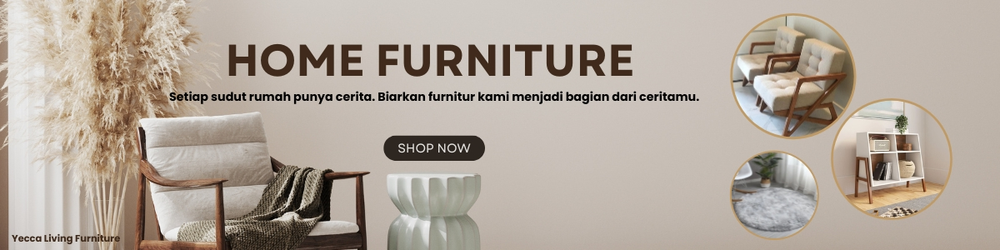
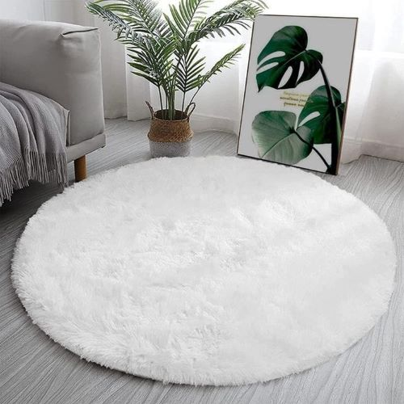
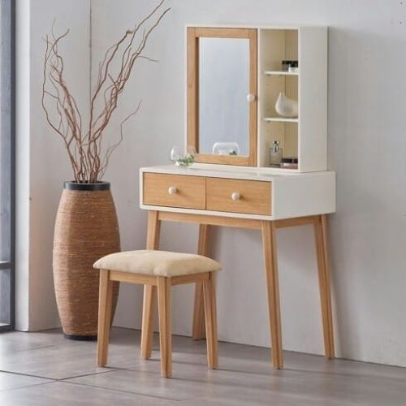
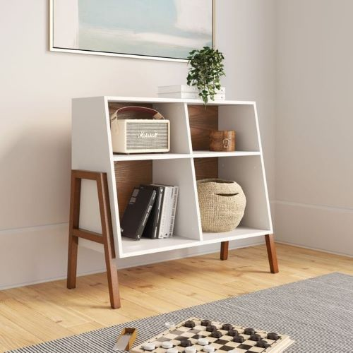
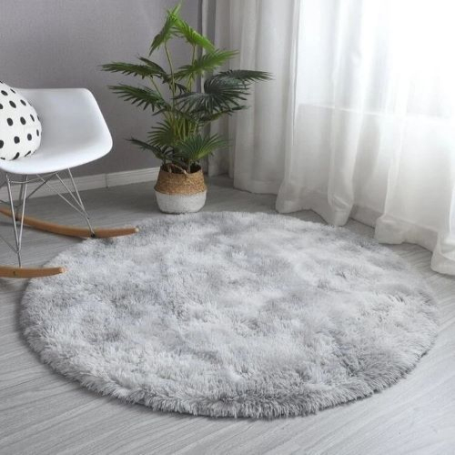
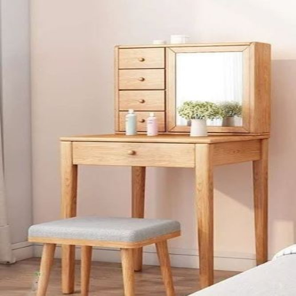
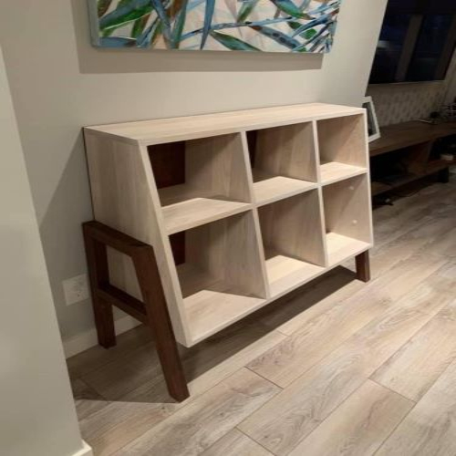
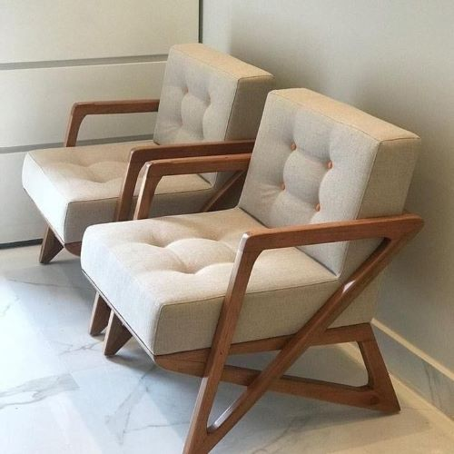
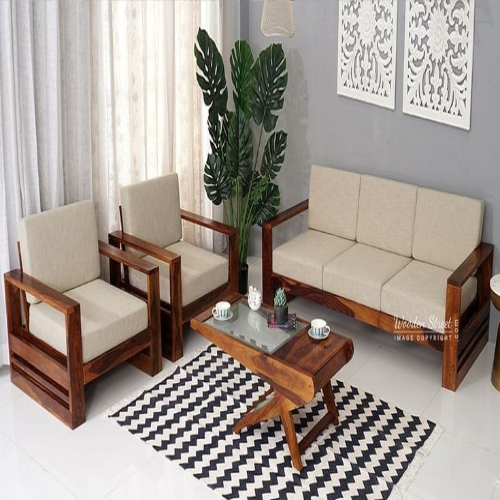
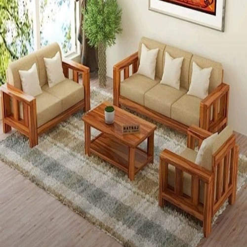

Karpet Bulu Frosty White
Karpet bulu berbentuk bulat dengan warna putih bersih yang elegan, cocok untuk mempercantik ruang tamu, kamar tidur, atau area santai Anda. Memberikan nuansa hangat dan mewah pada ruangan.
Fitur Unggulan:
✔️ Lembut dan nyaman saat diinjak
✔️ Warna netral yang cocok untuk berbagai gaya interior
✔️ Ringan dan mudah dipindahkan
✔️ Anti-slip di bagian bawah untuk keamanan

Serenity White Meja Rias
Meja rias bergaya minimalis modern yang dilengkapi dengan cermin, rak penyimpanan, dan bangku empuk. Cocok untuk mempercantik kamar tidur Anda, sekaligus memberikan kenyamanan saat berdandan. Warna putih natural yang netral membuatnya mudah dipadukan dengan berbagai tema interior.
Fitur Unggulan:
✔️ Desain minimalis elegan yang hemat ruang
✔️ Bangku empuk yang nyaman digunakan
✔️ Cermin lipat multifungsi dengan rak penyimpanan tersembunyi
✔️ Konstruksi kokoh dan tahan lama

Rak Kayu Putih Klasik
Rak serbaguna dengan desain klasik modern, memadukan warna putih bersih dengan sentuhan kaki kayu natural. Dilengkapi 4 ruang simetris untuk menyimpan dan menata buku, dekorasi, tanaman, atau barang lainnya. Cocok untuk ruang tamu, kamar, maupun ruang kerja.
Fitur Unggulan:
✔️ Multi-fungsi: rak buku, pajangan, organizer
✔️ Struktur kokoh dengan kaki solid yang kuat
✔️ Mudah dipindahkan dan ringan
✔️ Perakitan mudah dengan panduan sederhana

Karpet Bulu Frosty Abu
Karpet bulu lembut berwarna abu muda dengan desain bulat yang estetik dan nyaman. Hadirkan nuansa hangat, elegan, dan cozy di ruangan favoritmu. Cocok untuk ruang tamu, kamar tidur, atau ruang santai.
Fitur Unggulan:
✔️ Super lembut & halus
✔️ Anti-slip
✔️ Desain elegan
✔️ Multifungsi

Serenity Klasik Meja Rias
Meja rias kayu bergaya klasik minimalis dengan sentuhan alami, lengkap dengan cermin besar dan bangku duduk empuk. Desain fungsional dan elegan yang cocok untuk mempercantik kamar tidur Anda.
Fitur Unggulan:
✔️ Konstruksi kokoh
✔️ Desain elegan & natural
✔️ Bangku empuk & nyaman
✔️ Multifungsi

Rak Kayu Klasik
Rak kayu serbaguna dengan desain klasik-modern yang menghadirkan sentuhan hangat dan elegan pada ruangan Anda. Cocok digunakan sebagai rak buku, rak pajangan, atau rak penyimpanan lainnya di ruang tamu, kantor, maupun kamar tidur.
Fitur Unggulan:
✔️ Desain unik & estetik menampilkan bentuk kaki menyilang
✔️ Finishing halus, aman untuk anak-anak dan mudah dibersihkan
✔️ Mudah dipadukan untuk berbagai konsep interior modern, minimalis, atau rustic
✔️ Multifungsi

Sepasang Zeta Minimalist Chair
Zeta Minimalist Chair adalah pilihan sempurna bagi Anda yang menginginkan sentuhan modern dan elegan dalam ruang tamu atau ruang baca Anda. Dengan desain rangka berbentuk huruf "Z", kursi ini tidak hanya tampil unik tapi juga memancarkan kesan kuat, dinamis, dan artistik. Dijual dalam satu set isi dua kursi.
Fitur Unggulan:
✔️ Desain Ikonik Zeta berbentuk "Z" yang artistik & modern
✔️ Eksklusif & Mewah
✔️ Struktur kayu jati solid memastikan kekuatan dan daya tahan
✔️ Kenyamanan Maksimal

Woodlyn White Sofa Set
Sofa set bergaya minimalis dengan sentuhan kayu alami yang elegan. Cocok untuk mempercantik ruang tamu Anda dengan nuansa hangat dan modern.
Fitur Unggulan:
✔️ Desain minimalis & estetik
✔️ Rangka kuat dari kayu solid
✔️ Mudah dibersihkan dan dirawat
✔️ Bantalan empuk & nyaman

Woodlyn Klasik Sofa Set
Hadirkan nuansa klasik yang hangat dan elegan di ruang tamu Anda dengan Woodlyn Klasik Sofa Set. Perpaduan desain tradisional dan material kayu solid memberikan kesan mewah yang timeless.
Fitur Unggulan:
✔️ Desain klasik & elegan
✔️ Rangka kayu solid, tahan lama
✔️ Meja kayu fungsional dengan rak bawah
✔️ Bantalan tebal, duduk nyaman
Yecca Living Furniture, kami percaya bahwa setiap sudut rumah punya ceritanya sendiri. Karena itu, kami hadir untuk menemani kamu menciptakan ruang yang nggak cuma nyaman tapi juga penuh gaya. Mulai dari karpet bulu yang lembut, rak kayu minimalis, sampai meja rias dengan sentuhan natural. Semua produk kami dipilih dengan hati-hati untuk melengkapi rumahmu. Kami mengusung desain simpel, estetik, dan fungsional. Sangat cocok buat kamu yang suka tampilan clean dan stylish. Kami juga menggunakan bahan-bahan premium pada setiap produk yang kami jual.Jadi, nggak perlu bingung lagi cari furnitur kece, karena di sini kamu bisa temukan berbagai pilihan yang pas buat rumah impian kamu. Yuk, mulai kisah baru rumahmu bareng Yecca!
📌 Mau order? Gampang banget!
1. Klik tombol “Detail” di halaman produk.
2.Pilih menu “Order Produk Ini”, nanti kamu akan langsung terhubung ke WhatsApp Admin kami.
3.Lanjutkan chat untuk tanya stok, konsultasi, dan proses pembayaran.
✅ Jangan lupa pastikan data pengiriman sudah benar ya!